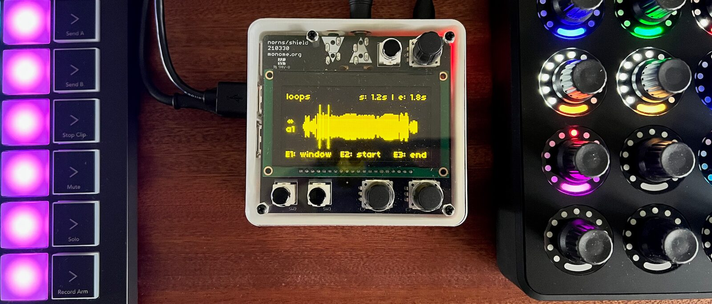
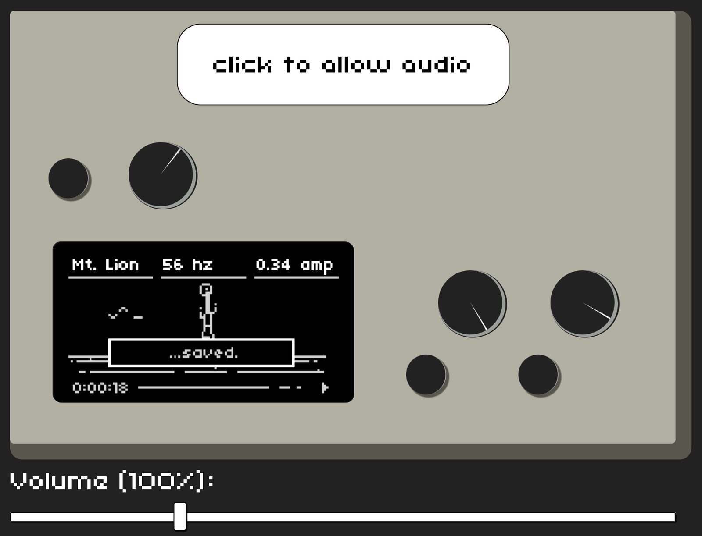
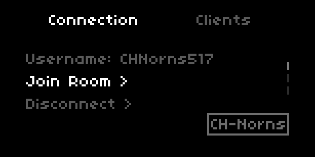
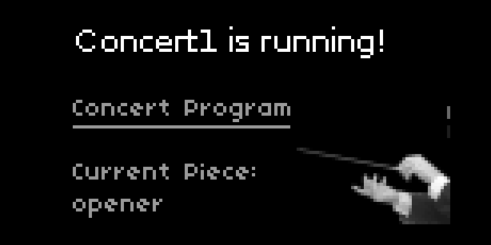

Approaching the Norns Shield as a Laptop Alternative for Democratizing Music Technology Ensembles
Abstract
Music technology ensembles—often consisting of multiple laptops as the performers’ primary instrument—provide collaborative artistic experiences for electronic musicians. In an effort to remove the significant technical and financial barriers that laptops can present to performers looking to start their own group, this paper proposes a solution in the form of the Norns Shield, a computer music instrument (CMI) that requires minimal set-up and promotes immediate music-making to performers of all skill levels. Prior research centered on using alternative CMIs to supplant laptops in ensemble settings is discussed, and the benefits of adopting the Norns Shield in service of democratizing and diversifying the music technology ensemble are demonstrated in a discussion centered on the University of Texas Rio Grande Valley New Music Ensemble’s adoption of the instrument. A description of two software packages developed by the author showcases an extension of the instrument’s abilities to share collaborative control data between internet-enabled CMIs and to remotely manage script launching and parameter configuration across a group of Norns Shields, providing resources for ensembles interested in incorporating the device into their ranks.
Author Keywords
Collaborative technology, Technology performance, Computer music instruments, Software, Democratizing NIMEs
CCS Concepts
•Applied computing → Performing arts; Sound and music
computing; •Human-centered computing → Collaborative
and social computing systems and tools;
Introduction
Music Technology ensembles provide group performative experiences for musicians who look to electronic instruments as their primary vehicle for sonic expression [1]. Often centered in academic programs, the trend that began in 2005 with Princeton’s PLOrk has grown into an international movement, with similar groups consisting of homogenous setups centered on laptops as the primary instruments. Previous research has stated the benefits of outfitting each performer with a laptop: the range of methods for interlinking ensemble members to share collaborative control data between one another, the deployment of virtual instruments hosted in any number of creative audio platforms, the modern digital signal processing horsepower afforded by such a machine, and the ease of troubleshooting software issues across similar devices [2].
While these affordances make laptops a natural choice for music technology ensembles, they are not without issue. Groups whose leaders or members have little or no previous experience performing with computer music instruments (CMIs) can encounter significant technical barriers during their rehearsals and performances. The monetary investment required to outfit multiple performers with their own laptops can present a financial barrier to many music technology programs as well as to the students asked to provide their own personal machines to fill out an ensemble’s ranks. Additionally, the wide range of software options available for music performance on a laptop can leave burgeoning electronic musicians feeling overwhelmed, and few of the most popular choices make it easy for beginners to jump right to the music-making process. Dynamic coding environments such as Max and Pure Data and DAWs tailored for live performance such as Ableton Live provide immense potential to computer musicians but require a considerable time investment to learn the skills necessary for building bespoke digital music instruments or becoming comfortable with the platform’s layout and workflow. Students in academic programs are privy to the tutelage of their courses and teachers to guide them through the digital music instrument (DMI) development process and some global community workshops are available to those outside of academia. In either case, the near-unlimited potential to build complex sound generators with dense user interfaces in these platforms can lock ensembles comprised of novice performers into a pattern of spending their rehearsal time focusing on learning the requirements for making music with a particular tool [3]. Presenting newcomers with experiences that circumvent the dense managerial tasks, financial boundaries, and overwhelming interaction methods previously described can provide ensemble directors and members alike with an easier path to starting their own ensembles, both in and beyond university settings.
This paper presents a solution in the form of the Norns Shield, a laptop alternative with appeal to performers of all skills levels that was adopted for use in the University of Texas Rio Grande Valley New Music Ensemble. The following sections discuss prior approaches at democratizing the music technology ensemble through the use of mobile devices and single-board computers, the affordances provided by the Norns Shield and a comparison to similar “tabletop” CMIs, and the creation of new software used to remotely manage multiple Norns Shields and provide enhanced telematic collaboration options between performers.
Prior Approaches
Smartphones and Tablets
In the spirit of democratizing and diversifying the music technology ensemble, previous research has explored concerted efforts to build ensembles around CMIs other than laptops. The ubiquity of smartphones and tablets presents ensembles with the option of using an instrument that its members are likely to already own, avoiding the need to source start-up funding [4]. The portability of mobile devices provides opportunities to move beyond traditional concert environments, and their inherent networking capabilities open the door to cultivating interactive experiences between performers and audiences [5][6].
Universal adoption of smartphones as ensemble devices can present groups with unique challenges. Developing custom applications [7] or converting preexisting software creations [8] can be required to extend the pool of virtual instruments compatible with each device’s specific operating system. While the WebAudio API serves as a cross-platform option for generating new tools, the process of designing graphical user interfaces and audio processing engines can be daunting to first-time coders despite the existence of helpful JavaScript libraries [9][10][11].
Single-board Computers
Single-board computers (SBCs) such as the Raspberry Pi and the Bela [12] are low-cost alternatives to laptops for ensembles to consider [13] [14]. These devices can be flashed with a customized OS helpful for developing and running software instruments [15], and they share a laptop’s ability to connect to a wired or wireless network, making collaborative networked musical performances possible on a smaller, more affordable machine. The inclusion of compact soundcards and/or sensor “hats” allow performers to interact with software instruments through sonic, tactile, or motion input.
While the move toward SBCs lowers the financial barriers of starting an ensemble, their adoption poses issues in the form of practical usability for novices. Reaping the benefits of an SBC’s cost, portability, and small form factor means sacrificing screens, keyboards, and trackpads, thereby removing graphical user interfaces and the ability to easily navigate through the OS. On a laptop or mobile device, these features provide intuitive means for interacting with virtual instruments and launching/switching between software during performances. The act of writing shell scripts or communicating with each instrument through a remote terminal connection to launch and modify the software is a common workaround, but these techniques can be daunting to those without prior programming experience, and off-putting to those who wish to begin performing immediately.
A Solution through Tabletop CMIs
In recent years, a slew of portable, “tabletop” computer music instruments built with SBCs at heart (such as the Critter & Guitari Organelle,1 the OWL programmable pedal,2 and the Daisy suite of instruments3) have sprung onto the marketplace. These devices add integrated audio I/O hardware and tactile control elements into the equation and their physical form factors mimic existing electronic instruments such as guitar pedals and synthesizers, providing users with intuitive designs and familiar performance interfaces. Mimicking a laptop’s versatility, a single device can switch roles with ease. To program these instruments, users simply “drag and drop” sketches that have been built in platforms such as Max, Pure Data, or written in C++ onto the instrument over a USB connection. Libraries of pre-existing patches and scripts developed by community members provide a valuable resource for ensembles whose members are reticent or unable to program their own software instruments.
The Norns Shield
The Norns Shield was chosen as the ideal CMI for introducing students in the UTRGV New Music Ensemble to the experience of group performance with technology. Developed by Monome, the Norns Shield: A) narrows the options of musical tools to choose from to simplify and expedite the act of making music, B) offers a low barrier of entry for beginners looking to explore CMI performance due to its price and familiar interface elements, and C) provides a pathway toward expanded use of the device through scalable education resources for software development, opening doors to those who wish to collaborate and create in a “low floors, high ceilings, and wide walls” environment [16]. The Norns Shield is a single PCB add-on board for a Raspberry Pi Model 3b adding a 128 x 64-pixel screen, three rotary encoders, three buttons, audio I/O circuitry, and 3.5mm jacks to the popular pocket-size computer. At the time of publication, a Norns Shield cost approximately $330 USD, putting the instrument at a higher cost than some bespoke SBC setups4 but at a competitive price point when compared to the majority of laptops used in music technology ensembles.


A Norns Shield (center) with connected MIDI grid and encoder interfaces.
Popular in the Eurorack and boutique synthesizer communities, the Norns Shield’s prominence on social media and in global electronic musical circles places it in a unique position to entice newcomers, and the instrument provides a number of benefits to users who are new to performing with CMIs. The instrument’s minimal operating system streamlines the means of managing its script collection, writing preset configuration files, assigning MIDI controller and audio system configurations on the fly, and storing and creating media files for use in performance. Users interact with the Norns Shield OS through the onboard encoders and keys and are presented with a graphical user interface displayed on the built-in screen. These methods of interaction are intuitive for those who have limited experience with embedded systems, empowering users to make alterations to their instrument without requiring the use of a command-line interface or the addition of an external monitor, keyboard, and mouse.
As is the case with the tabletop CMI platforms mentioned previously, the Norns Shield behaves as a musical chameleon; users launch applications referred to as "scripts" by scrolling through an on-screen list, and each new script changes the core functionality of the instrument. While it boasts fewer physical interface elements in comparison to devices like the Owl pedal or the Organelle, multiple options exist for incorporating custom controllers due to the Norns Shield’s four USB ports, Wi-Fi connectivity, and global Open Sound Control (OSC) access to any script’s parameters.
Operating System and Software Development Opportunities
The Norns Shield OS is designed to run applications that follow a rigid system architecture, a notable caveat that limits its flexibility for virtual instrument developers. For each script, audio processing/synthesis is handled by either a provided SuperCollider engine or Softcut, Monome's custom sample recording and playback software. Interactivity with the underlying audio process is handled through a Lua script that interprets and passes data to and from the Norns Shield hardware. This results in a narrow means of developing software to run on the instrument which could be a hindrance for ensembles hoping to build applications in platforms such as Max, Pure Data, the Web Audio API, or C++ and run them on all ensemble instruments uniformly.
While the SuperCollider and Lua script format presents certain limitations, there are benefits to the existing infrastructure. The device’s creators promote the Norns Shield as both an instrument and a scalable educational platform aimed at democratizing the process of musical software development. New users and ensembles can gradually extend the role the device plays in their creative sandbox, first performing with the default library of synthesizer and digital signal processing scripts before gradually exploring the process of creating their own scripts. Through extensive tutorials and reference documentation provided by Monome5 and workshops led by developers in the global community, the Norns Shield is designed to help first-time programmers wade into the development process, and the large collection of user-created scripts available through online community-driven repositories6 provide new virtual instruments to those looking to focus solely on performing. Furthermore, these resources and support systems serve as accessible opportunities for creative audio programming education outside of traditional academic institutions.
Utilizing The Norns Shield in an Ensemble
While the Norns Shield excels as a flexible CMI, certain limitations presented the opportunity for improvement. In early tests, UTRGV ensemble members encountered issues that limited the potential of the instrument to provide networked, collaborative performance opportunities and concert management tasks. By default, sharing control data between co-located performers is limited to sending OSC or MIDI messages, and interaction over a telematic network was only available through a single script at the time of this paper’s writing: norns.online, developed by Zach Scholl [17]. Relying on OSC limits the performer’s ability to collaborate telematically without establishing and maintaining their own remote server, and the remote performance opportunities provided by norns.online are limited by that script’s use of a web browser interface for controlling a single Norns Shield in a 1-to-1 interaction topology. In regards to managing multiple Norns Shields in a concert or rehearsal environment with the goal of saving time and minimizing errors navigating the menu-dense OS, no preexisting script provided the ability for a single user to carry out tasks such as loading and switching between scripts, setting a shared tempo and clock source, and recalling parameter presets globally across multiple devices.


The norns.online web browser interface. An avatar of the connected Norns Shield shows a real-time rendering matching that device's current script UI.
To extend the Norns Shield’s abilities to communicate between internet-enabled devices and other CMIs across local and remote networks and manage higher-level system functions across multiple instruments, two new scripts—CH-Norns and Ensemble—were developed for the ensemble. The following sections detail how these scripts work and the benefits they offer to users interested in integrating multiple Norns Shields into networked music performances.
CH-Norns
CH-Norns [18] is a software package that enables Norns Shields to send and receive control data across a wireless network in multiple interaction topologies. Built with the Collab-Hub framework [19], CH-Norns gives an ensemble the ability to create collaborative performances by linking their device with laptops (i.e. software instruments built using client packages available for Max and Pure Data), mobile devices (through a JavaScript library for web browsers), and custom instruments/interfaces built with Wi-Fi-enabled microcontrollers. Collab-Hub offers users options to use either their remote cloud-based version of their server or to run a local instance of the server to take advantage of low-latency transmission speeds during co-located performances.
The CH-Norns package consists of a customized version of the Collab-Hub OSC client-end server and the primary Lua script. The script serves as a utility for performers to connect to the network, set and modify their username, join or leave subgroups of users known as Rooms, and manage data sent and received between other ensemble members. Performers start by setting their username and intended Room from the Connect page and then launch the server with a single button press, establishing a connection to the Collab-Hub network over Wi-Fi. Once the background server is running, performers can navigate away from CH-Norns, load any script from their library, and have its performance parameters remotely modified by a fellow ensemble. In the background, CH-Norns passes data between the currently loaded script and other connected clients by first converting it to and from OSC messages. Performers can navigate Back to CH-Norns’ Send page to transmit control data tagged with the header of their choice. Data received from users that is not tagged with a header specific to the currently loaded script’s parameters can be mapped from the Get page.7


The CH-Norns script UI displaying options on the Connection Controls page.
CH-Norns presents opportunities to adjust interaction topologies dynamically without the need to stop and modify the server when changes are made. Additionally, control and event data sent through the network can come from any number of sources—tangible hardware interfaces, autonomous data-generating bots, or software GUIs—providing a range of methods for mediating intended performance control over a Norns Shield.
Ensemble
The Ensemble [20] script was created to eliminate the script selection, clock settings, and preset modification process for the performer, allowing a single user to remotely launch scripts and configure audio engine parameters across a group of Norns Shields and reducing the time spent menu diving during performances and rehearsals. The core functionality of the script was modeled after automation systems such as the Laptop Orchestra of Louisiana’s GRENDL [21] and a similar ensemble management process practiced by the Raspberry Pi Orchestra at Virginia Tech [22].
Ensemble makes use of the Collab-Hub OSC Client-end server from the CH-Norns collection. On launch, each user designates their role as either a Performer in the group or as the Conductor before connecting to the Collab-Hub server. The Conductor Norns UI provides two pages of controls for managing ensemble members: Concert Program controls and Concert Clock controls. The Concert Program page allows the Conductor to move through a pre-programmed Concert, a pre-loaded file containing pairs of piece titles and performance data packets to be sent out to each Performer Norns.8


The Ensemble script UI displaying the Concert Controls page.
At the press of a key, the Conductor transmits data from the Concert document as the rehearsal or performance progresses. Performance data packets contain the name of the script to load and the preset collection file name to recall, and any specific data to pass to the script's audio engine that isn't mapped to a pre-coded parameter. In the following example from a Concert document, all Performer Norns are told to load the Awake script, load the "DMaj_Jam" preset file, and set the length of Sequence Pattern 2 to seven for the first piece on the Concert1 program:
"Concert1": {
"opener": [
{
"script": "awake",
"presets": "DMaj_Jam",
"messages": [
{
"type": "control",
"header": "two_length",
"val": 7
}
]
}
]
}The Concert Clock page displays controls to set the tempo and start the transport on each Performer Norns simultaneously. This option is only available when connecting to a locally-run Collab-Hub server and requires Ableton Link to work.
Only one Norns Shield can be designated as the Conductor at a time, and Performers are blocked from sending out script-loading calls. Once connected to the network, the role of each ensemble member is fixed until they log off from the server. These protocols were enacted in order to avoid any accidental disruption of a rehearsal session or concert performance as well as to provide a necessary step granting consent before a user’s instrument can be manipulated.
Conclusion and Further Directions
Use of the Norns Shield in the UTRGV New Music Ensemble’s rehearsals and performances has shown encouraging signs of the device’s ability to serve as a laptop alternative. Both novice and experienced music technology users in the group have embraced the creative tools provided by preexisting scripts, and the development of the CH-Norns and Ensemble scripts has streamlined managerial tasks and presented ensemble members with a platform for designing networked musical performances. To aid members of the global Norns development community in their own ensemble-centered projects, both of the aforementioned scripts have been published online as open-source software.9
In addition to its expanded use in future performances, the ensemble plans to host multiple outreach events centered on the Norns Shield at local high schools and performing arts academies. These events will take the form of workshops and concerts that promote the device’s use as an entry-level instrument for those interested in starting music technology ensembles in their own schools and communities.
Acknowledgments
The author would like to thank the College of Fine Arts and the School of Music at the University of Texas Rio Grande Valley for their support of this research. Funding for the creation of the UTRGV New Music Ensemble was provided by the University of Texas Rio Grande Valley Student Activities Fee Council.
Ethics Statement
This research centered on the adoption of computer music instruments developed by a third-party manufacturer. No compensation—financial or professional—was received by the author or the author’s academic institution in exchange for choosing these devices for this research. Funding for the purchase of the Monome Norns Shields was provided by the University of Texas Rio Grande Valley Student Activities Fee Council as part of a larger fund provided to purchase equipment for the piloting of the UTRGV New Music Ensemble.
Student ensemble members we asked to provide their feedback on elements of the existing Norns Shield operating system they felt were missing that could provide more opportunities for collaborative networked performance and simplifying ensemble managerial tasks. This feedback was collected anonymously and used solely for the purpose of road-mapping the development of the CH-Norns and Ensemble Norns scripts’ primary features. Students participated voluntarily and were not required to provide feedback, and their academic standing in the course tied to the New Music Ensemble was in no way affected by their choice to participate in this informal questionnaire.
Footnotes
- ↩
- ↩
- ↩
Notably, The Raspberry Pi Orchestra based out of Virginia Tech uses a per-performer setup comprising a displayless Raspberry Pi, an external sound card, and a sensor interface shield at a $75 price point.
↩- ↩
- ↩
To see a video demonstration, please visit https://norns.community/authors/anthony-t-marasco/ch-norns
↩To see a video demonstration, please visit https://norns.community/authors/anthony-t-marasco/ensemble
↩To download these scripts, search the Norns script library through the built in Maiden IDE on Norns or visit https://norns.community/authors/anthony-t-marasco/ch-norns and https://norns.community/authors/anthony-t-marasco/ensemble .
↩
Citations
- ↩Wang, G., Trueman, D., Smallwood, S., & Cook, P. (2008). The Laptop Orchestra as Classroom. Computer Music Journal, 32, 26–37. https://doi.org/10.1162/comj.2008.32.1.26
- ↩Trueman, D. (2007). Why a laptop orchestra? Organised Sound, 12(2), 171–179. https://doi.org/10.1017/S135577180700180X
- ↩Jack, R. H., Harrison, J., Morreale, F., & McPherson, A. P. (2018). Democratising DMIs: the relationship of expertise and control intimacy. In T. M. Luke Dahl Douglas Bowman (Ed.), Proceedings of the International Conference on New Interfaces for Musical Expression (pp. 184–189). Blacksburg, Virginia, USA: Virginia Tech. https://doi.org/10.5281/zenodo.1302539
- ↩Arango, J. J., & Giraldo, D. M. (2016). The Smartphone Ensemble. Exploring mobile computer mediation in collaborative musical performance. Proceedings of the International Conference on New Interfaces for Musical Expression, 61–64. Brisbane, Australia: Queensland Conservatorium Griffith University. https://doi.org/10.5281/zenodo.1175850
- ↩Carson, T. (2018). A more perfect union: Composition with audience-controlled smartphone speaker array and evolutionary computer music. In J. Monschke, C. Guttandin, N. Schnell, T. Jenkinson, & J. Schaedler (Eds.), Proceedings of the International Web Audio Conference. Berlin, Germany: TU Berlin.
- ↩Poirier-Quinot, D., Matuszewski, B., Schnell, N., & Warusfel, O. (2017). Nü Soundworks: Using spectators smartphones as a distributed network of speakers and sensors during live performances. In F. Thalmann & S. Ewert (Eds.), Proceedings of the International Web Audio Conference. London, United Kingdom: Queen Mary University of London.
- ↩Weng, R. (2020). Interactive Mobile Musical Application using faust2smartphone. In R. Michon & F. Schroeder (Eds.), Proceedings of the International Conference on New Interfaces for Musical Expression (pp. 1–4). Birmingham, UK: Birmingham City University. https://doi.org/10.5281/zenodo.4813164
- ↩Brinkmann, P., Kirn, P., Lawler, R., McCormick, C., Roth, M., & Steiner, H.-C. (2011). Embedding pure data with libpd. Proceedings of the Pure Data Convention, 291. Citeseer.
- ↩Mann, Y. (2015). Interactive Music with Tone.js. In S. Goldszmidt, N. Schnell, V. Saiz, & B. Matuszewski (Eds.), Proceedings of the International Web Audio Conference. Paris, France: IRCAM.
- ↩Mitchusson, C., Marasco, A. T., & Allison, J. (2017). Usage of Physics Engines for UI Design in NexusUI. In F. Thalmann & S. Ewert (Eds.), Proceedings of the International Web Audio Conference. London, United Kingdom: Queen Mary University of London.
- ↩Taylor, B., Allison, J., Conlin, W., Oh, Y., & Holmes, D. (2014). Simplified Expressive Mobile Development with NexusUI, NexusUp, and NexusDrop. Proceedings of the International Conference on New Interfaces for Musical Expression, 257–262. London, United Kingdom: Goldsmiths, University of London. https://doi.org/10.5281/zenodo.1178951
- ↩McPherson, A. (2017). Bela: An embedded platform for low-latency feedback control of sound. The Journal of the Acoustical Society of America, 141(5), 3618–3618.
- ↩Bukvic, I. (2014). Pd-L2Ork Raspberry Pi Toolkit as a Comprehensive Arduino Alternative in K-12 and Production Scenarios. Proceedings of the International Conference on New Interfaces for Musical Expression, 163–166. London, United Kingdom: Goldsmiths, University of London. https://doi.org/10.5281/zenodo.1178726
- ↩Hamilton, R. (2021). Ensemble Nonlinear: Low-cost Ensemble Performance with Networked Raspberry Pi’s. Proceedings of the International Computer Music Conference, 74–78. Santiago, Chile.
- ↩Berdahl, E., Salazar, S., & Borins, M. (2013). Embedded Networking and Hardware-Accelerated Graphics with Satellite CCRMA. Proceedings of the International Conference on New Interfaces for Musical Expression, 325–330. Daejeon, Republic of Korea: Graduate School of Culture Technology, KAIST. https://doi.org/10.5281/zenodo.1178476
- ↩Resnick, M., Maloney, J., Monroy-Hernández, A., Rusk, N., Eastmond, E., Brennan, K., … Kafai, Y. (2009). Scratch: Programming for All. Commun. ACM, 52(11), 60–67. https://doi.org/10.1145/1592761.1592779
- ↩Scholl, Z. (2021). norns.online. Retrieved from https://norns.community/en/authors/infinitedigits/norns-online
- ↩Marasco, A. T. (2022). ch-norns. Retrieved from https://norns.community/authors/anthony-t-marasco/ch-norns
- ↩Hwang, N., Marasco, A. T., & Sheffield, E. (2021). Collab-Hub: A system for creating collaborative telematic music performances with web-based instruments and creative development platforms. In L. Joglar-Ongay, X. Serra, F. Font, P. Tovstogan, A. Stolfi, A. A. Correya, … X. Favory (Eds.), Proceedings of the International Web Audio Conference. Barcelona, Spain: UPF.
- ↩Marasco, A. T. (2022). ensemble. Retrieved from https://norns.community/authors/anthony-t-marasco/ensemble
- ↩Beck, S. D., Branton, C., & Maddineni, S. (2011). Tangible Performance Management of Grid-based Laptop Orchestras. Proceedings of the International Conference on New Interfaces for Musical Expression, 207–210. Oslo, Norway. https://doi.org/10.5281/zenodo.1177951
- ↩Bukvic, I. I. (2017). RPi ORchestra. Retrieved from http://ico.bukvic.net/main/raspberry-pi-orchestra/